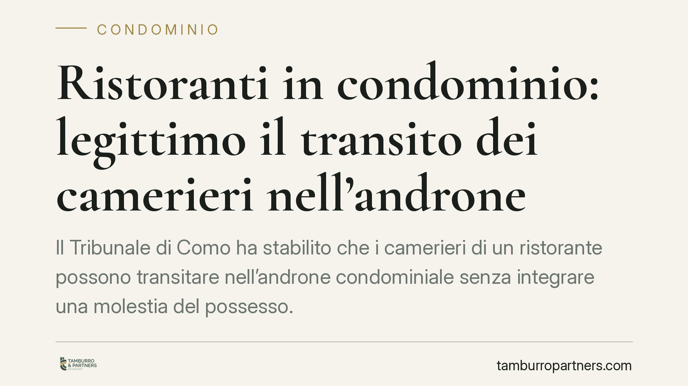

Ristoranti in condominio: legittimo il transito dei camerieri nell'androne
Il Tribunale di Como ha stabilito che i camerieri di un ristorante possono transitare nell'androne condominiale senza integrare una molestia del possesso. Il passaggio non altera l'estetica dell'edificio né impedisce agli altri condòmini l'uso delle parti comuni. Una pronuncia che ridisegna i confini tra uso lecito e abuso delle aree condivise, in particolare quando nel fabbricato convivono attività commerciali e destinazione abitativa.

Il caso
Un ristorante inserito in un edificio condominiale utilizzava l'androne comune come via di passaggio per il personale di sala. Alcuni condòmini avevano contestato quel transito, ritenendolo una turbativa del proprio possesso sulle parti comuni e chiedendone la cessazione.
Il Tribunale di Como ha respinto la domanda. Secondo i giudici, il via vai dei camerieri non altera la destinazione dell'androne, non ne compromette l'estetica e non impedisce agli altri condòmini di farne un uso paritario. In assenza di questi presupposti, non c'è alcuna molestia da inibire.
Inquadramento normativo
Lo strumento invocato dai condòmini era l'azione di manutenzione del possesso, disciplinata dall'art. 1170 del Codice civile. La norma consente a chi possiede un bene di reagire contro le "molestie", cioè contro quei comportamenti che turbano il godimento del possesso senza però privarne materialmente il titolare (in quel caso si parlerebbe di spoglio).
Perché la molestia sia rilevante, però, non basta un fastidio soggettivo. Occorre un atto che incida concretamente sull'esercizio del possesso: una limitazione effettiva del godimento, non una semplice presenza sgradita. Il transito di persone in un androne — spazio per definizione destinato al passaggio — difficilmente supera questa soglia.
Va poi ricordato il principio generale dell'art. 1102 c.c.: ciascun condòmino può servirsi delle parti comuni purché non ne alteri la destinazione e non impedisca agli altri di farne pari uso. L'androne, per sua natura, serve proprio a consentire l'accesso e il transito. Utilizzarlo per passare — anche a fini lavorativi — rientra nella sua funzione tipica.
Implicazioni pratiche
La decisione conferma un orientamento pragmatico: la convivenza tra abitazioni e attività commerciali nello stesso edificio comporta fisiologicamente un uso più intenso delle parti comuni. Questo maggior uso non è di per sé illegittimo.
Per i condòmini che ospitano un esercizio commerciale, la pronuncia riduce il rischio di contenziosi fondati sul solo disagio percepito. Non ogni incremento del passaggio costituisce abuso.
Per chi invece subisce la presenza dell'attività, il messaggio è altrettanto chiaro: per ottenere tutela occorre dimostrare un pregiudizio concreto — ad esempio l'ingombro stabile dell'androne con carrelli o merci, il deposito di rifiuti, danni all'immobile o un uso che di fatto escluda gli altri. Il semplice transito di personale non basta.
È bene distinguere due piani spesso confusi. Un conto è il transito, tendenzialmente lecito. Altro conto sono gli abusi collegati: occupazione stabile degli spazi, immissioni rumorose oltre la normale tollerabilità (art. 844 c.c.), alterazione del decoro architettonico. Questi profili vanno valutati autonomamente e possono giustificare interventi diversi, anche in sede assembleare o con azione di merito.
Un ruolo centrale spetta poi al regolamento condominiale. Se di natura contrattuale, può limitare o vietare determinate destinazioni d'uso delle unità immobiliari, incidendo indirettamente anche sull'attività commerciale. Verificare cosa preveda il regolamento è quindi il primo passo prima di qualsiasi iniziativa.
Cosa fare in concreto
- Verificate il regolamento condominiale. Controllate se è di natura contrattuale e se contiene clausole sulle destinazioni d'uso o sull'utilizzo delle parti comuni: è da lì che dipende gran parte dei vostri margini.
- Documentate l'eventuale abuso. Se contestate l'uso dell'androne, raccogliete prove di un pregiudizio concreto — foto di ingombri stabili, testimonianze, eventuali danni — non limitatevi a segnalare il fastidio.
- Distinguete transito e immissioni. Rumori, odori o depositi vanno affrontati con strumenti diversi dall'azione possessoria: valutate l'art. 844 c.c. o l'intervento dell'assemblea.
- Portate la questione in assemblea. Spesso una disciplina condivisa degli orari e delle modalità d'uso previene il contenzioso ed è preferibile a un'azione giudiziale dall'esito incerto.
- Chiedete una valutazione preventiva. Prima di agire, fate esaminare il caso specifico: i presupposti dell'azione di manutenzione sono rigorosi e un'iniziativa infondata espone alle spese di lite.
---
*Contributo informativo a cura di Tamburro & Partners - Avv. Giuseppe Tamburro. Non costituisce parere legale.*
Ogni condominio ha una storia a sé.
Se gestisci un'amministrazione e vuoi un confronto su una specifica questione condominiale, scrivi allo studio. Ti rispondiamo entro un giorno lavorativo.